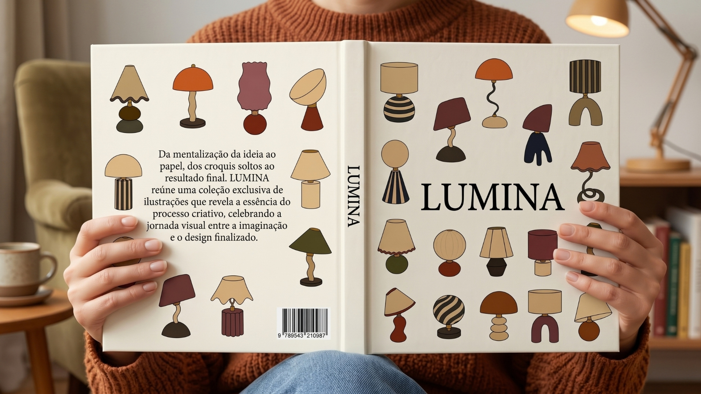
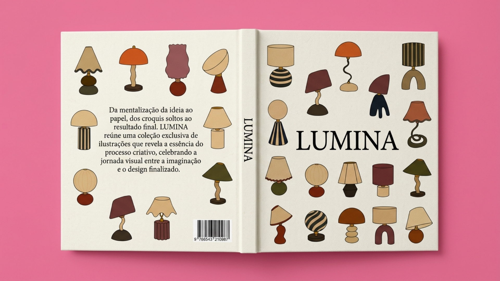
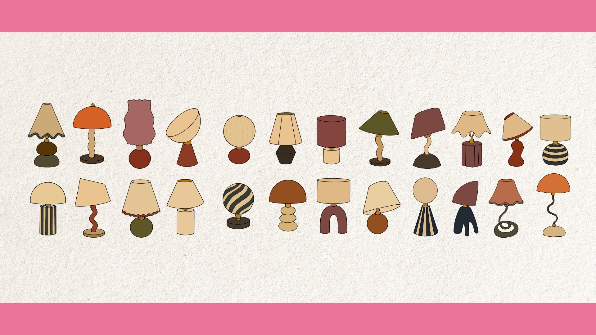
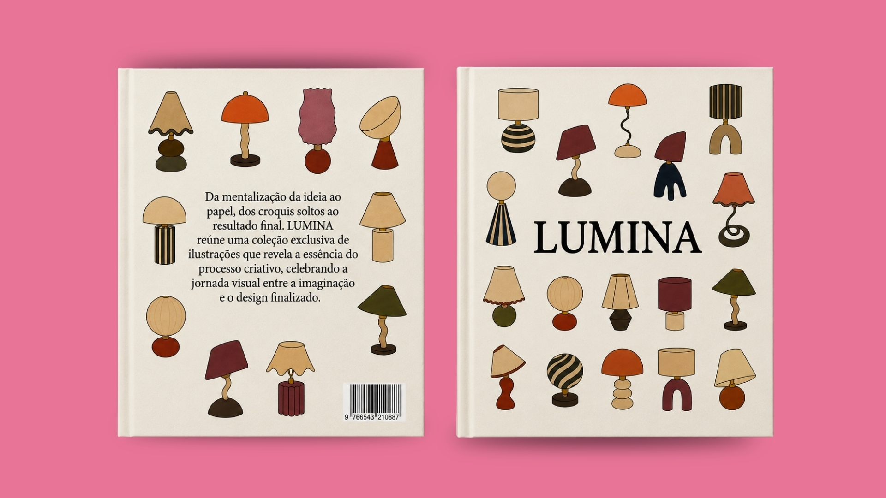
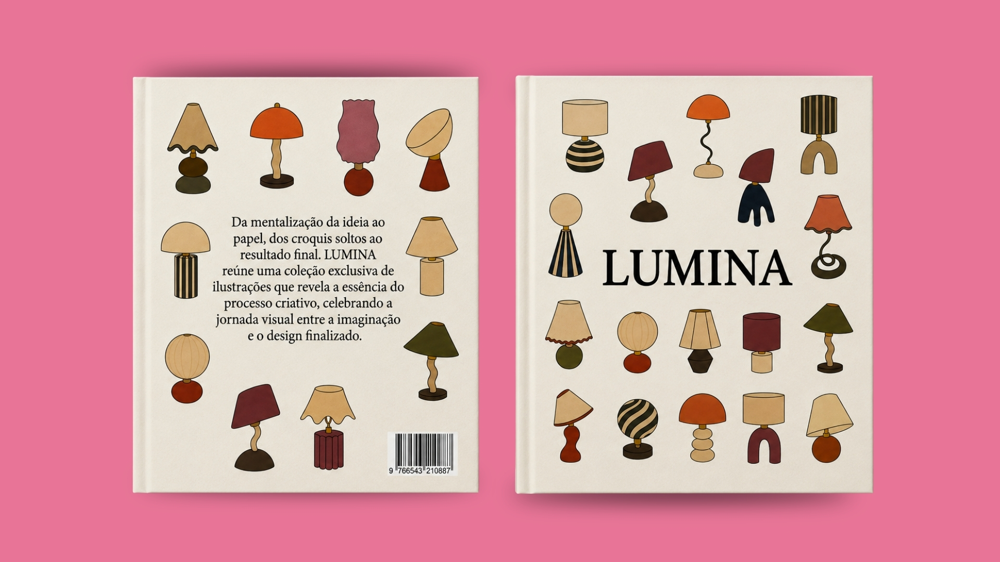
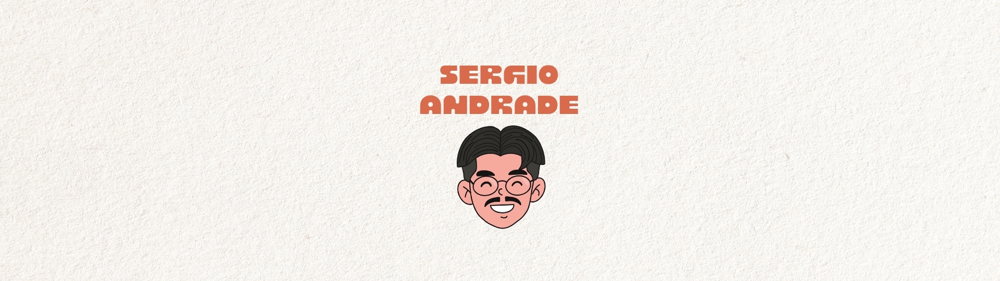

Editorial
Lumina
- Categoria
- Editorial
- Ferramentas
- Adobe Photoshop, Adobe Illustrator, Figma
Descrição:
Projeto editorial conceitual e ilustrações autorais para o livro LUMINA. Através de formas orgânicas, paleta de tons terrosos e tipografia clássica, o projeto visual mapeia a essência do processo criativo. Da mentalização da ideia e croquis soltos até o design finalizado.





